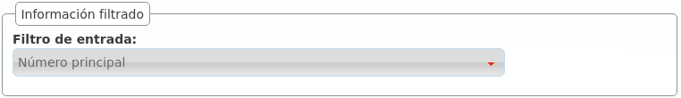

DDIs¶
- País
El país de la númeración pública que estamos dando de alta.
- DDI
El número en cuestión, sin códigos de país.
- Proveedor DDI
El proveedor DDI por el que entra la numeración. Esta relación permite aplicar las Transformaciones numéricas adecuadas.
- Filtro de entrada
Permite aplicar lógicas de filtrado en base a horario y calendario, se verán en Filtros de entrada externo. Dejar sin seleccionar para no aplicar filtro alguno.
- Enrutar
Un DDI puede tener distintos tratamientos. Para nuestro objetivo, enrutar al usuario Alice.
- Grabar llamadas
Dejar desactivado de momento, se explicará en Grabación de llamadas.
- Tarificar llamadas entrantes
Requiere del módulo de tarificación externa y permite tarificar llamadas entrantes a numeraciones especiales. Consultar a los desarrolladores de la solución en caso de estar interesados.
Filtro de entrada¶
Podemos seleccionar el Filtro de entrada externo configurado en la sección anterior.
Tratamientos¶
Vemos que tenemos más opciones aparte de enviar la llamada, una vez superado los filtros de horario y calendario (y previa locución de bienvenida), directamente a un usuario:
Consejo
También podemos apuntar el DDI a un fax virtual, pero esto se verá en el siguiente bloque.